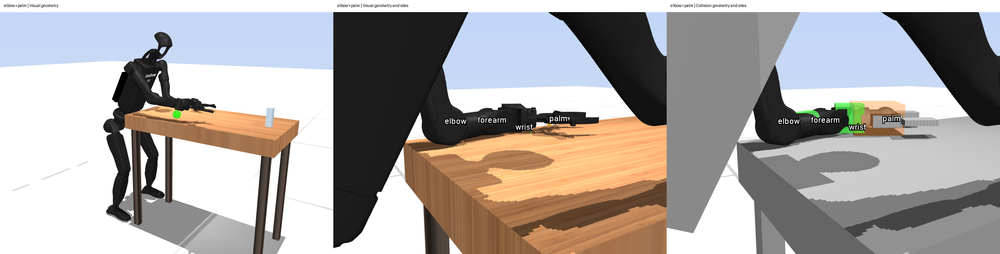
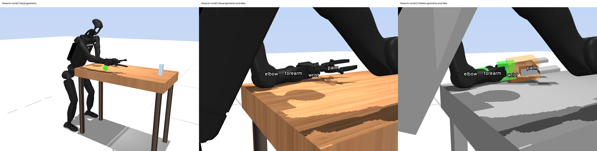

The current controller fixes both feet throughout every phase, and its brace points can differ from the contacting surfaces by centimetres. In an archived elbow+palm pose, the palm point is 22.3 mm above the table with zero gripper contacts; the wrist pad touches instead. A Crocoddyl revisit should begin with physical contact patches and foot motion. The earlier target sweep already selected different braces at different reach distances. Correcting the geometry provides a way to test whether those choices improve recovery and tolerance to estimation error.
The probe loaded the staged Magpie model and three poses from studies/runs/wristcell. It ran forward kinematics and collision detection without advancing physics. The cell's manifest records commit 62bacee. The JSON records the loaded XML hashes, geometry-array hashes, site definitions and full pose vectors.
| Mode | Selected site | Site height (mm) | Contact distance (mm) | Same-body contacts |
|---|---|---|---|---|
| Elbow + forearm | Elbow | 42.3 | 48.9 | 1 |
| Elbow + forearm | Forearm | 30.3 | 29.6 | 3 |
| Elbow + palm | Elbow | 44.9 | 49.6 | 2 |
| Elbow + palm | Palm | 22.3 | No contact | 0 |
| Forearm + wrist | Forearm | 34.8 | 98.9 | 2 |
| Forearm + wrist | Wrist | 8.2 | 49.9 | 1 |
The closest rendered mesh lies 26.8 mm from the elbow point, 10.6 mm from the forearm point, 10.0 mm from the palm point and less than 0.001 mm from the wrist point. An interior reference point can describe a rigid-body constraint, but a point force at that reference has a different moment arm from force at the surface. The correct force location therefore matters even when the link visibly touches.


croco_modes.contact_gaps assigns each table contact to the nearest requested site within a 100 mm radius. It permits a contact on another body to satisfy the site. In the point-contact optimizer, croco_bridge.mj_site_frames places the constraint and force frame at the site's body offset. These two definitions permit different force locations. Patch certification should check body identity, surface location and the allowed contact region together.
croco_plan.LeanOCP._contacts adds a six-dimensional contact constraint for each foot in every phase. The reference transforms are captured at the initial pose. The prediction consequently excludes foot sliding, lift and corrective stepping. Friction-cone penalties score the resulting wrench; they do not create sliding dynamics. This restriction belongs to our action model and schedule. Crocoddyl can optimize other dynamics and contact schedules.
Updating an anchor after observed slip is a useful baseline for adaptation. Predicting slip requires a contact model that permits tangential motion and loss of support. A first experiment should compare measured MuJoCo sole motion with CMPC predictions during a small lateral disturbance, then test a smooth frictional contact model on the same state and input sequence. A full humanoid solve follows only if force, slip and derivative errors are acceptable in that smaller test.
The August robustness report already found base-position sensitivity after correcting launch and quaternion bugs: success fell from 5/6 nominal runs to 3/6 with a 10 mm position-bias distribution. Combined degraded sensing gave 2/6 at 10 mm and 0/6 at 20 mm. These small experiments used older assets. The current default_sense draws a constant base bias per episode. A consistent world-frame translation or yaw rotation of the robot, table, goals and contact anchors should preserve the physical problem. Applying the error only to the estimated base creates a relative geometry error. Both cases need separate tests, followed by slow drift, delay and slip-dependent estimator errors.
The leaning paper's 210 mm/min value describes the fused Internal + LiDAR estimate through a foot-anchoring residual. Foot slip violates the stationary-foot assumption in that residual. A new estimator comparison needs synchronized raw odometry, fused state and independent reference motion before using this number to characterize FAST-LIO accuracy.
The five-site set gives 32 subsets including no brace. Those subsets specify simultaneous fixed points, with predetermined phases. Contact location within a surface and the timing of contact changes remain additional choices. A useful first representation is a small set of physical patches with continuous position within each patch, followed by optimization over a few feasible contact schedules. It can retain the discrete search while exposing its sensitivity to patch resolution.
The August target sweep selected elbow+wrist at 0.90 m, forearm+palm at 0.98 m, and forearm+wrist from 1.06 to 1.30 m. The default elbow+forearm was never the cheapest selected mode in that comparison. Selection reduced reported brace force by approximately 25–30%, but failures remained at the envelope ends. Geometry corrections can change that ranking. The same archive documents a separate controller bug in which the horizon shrank at a held plan's end; a new benchmark must verify its deployed hold path.
The current leaning paper reports 48/54 commanded reaches and 44/54 complete cycles, using 20 rollouts at 34 Hz. The owner's approximately 90 s maneuver duration should be measured from command to stable recovery. Controller latency alone cannot explain that duration. New trials should record approach, bracing, reaching and recovery times, intervention count, foot displacement and contact loads. Both controllers need the same robot assets, observations and task success criteria.
LLA-MPPI compares short predictions from a bank of physics models against measured transitions, then uses the selected model for MPPI planning. Its GPU model evaluation and CPU planning run asynchronously. SPIDER includes trajectory optimization against the worst cost among sampled dynamics variants, alongside demonstration retargeting and temporary contact guidance. Model selection and optimization across model variants offer separate experiments for this project; both papers use sampling methods.
A model bank can vary friction, compliance and actuator response around a physically credible contact model. Every candidate with fixed feet still excludes slip. Estimator bias can also resemble a dynamics error in prediction residuals; that is a risk to test here. The proposed comparison includes a fixed model, online model selection and optimization across model variants, with measured-state and ground-truth diagnostic inputs scored separately. Ground truth remains an evaluation instrument.
The state-frame checkpoint passes across all 35 hold nodes. Consistent translation and yaw change predicted contact force by less than 8.04×10⁻¹¹ N and first requested torque by less than 1.35×10⁻¹² N m. A base-only +x 10 mm error changes contact residuals by 10 mm, predicted force by 7.009 N and first torque by 0.01883 N m. The opt-in adapter checks table, target and contact references against a known transform and runs the complete objective in the archived plan frame. A nonzero-velocity integration check confirms that only MuJoCo's base linear channel needs rotation into Pinocchio coordinates.
The additional MuJoCo geometry check caught and corrected a study-probe error: the last free joint belongs to the object, while the table is a static body. Final table-centre error is zero. Three guarded numerical jobs used 7.84 s with zero new rollouts and no resguard event. The nominal hold still violates the forearm friction cone by 8.552 N. Coordinate consistency therefore leaves the measured contact feasibility and command-realization problems unresolved.
The completed motion-transfer checkpoint reduces wrist speed at first contact from 0.700 to 0.083 m/s by re-solving with an added velocity penalty. Startup acceleration remains 223.6 rad/s² and left-sole displacement increases by 5.55 mm. Fixed-position startup reaches 175.6 rad/s² without an approach command. These three rollouts support an initialization/servo-contact contribution alongside commanded motion. Physical table support and reach persist, but the combined improvement criterion fails and the correction remains opt-in. A 17 October review reproduced 72 numerical checks without another rollout.
A supported-handover comparison should re-solve from the estimated state after measured foot load and joint velocity settle, using the same model, target and 35-node horizon. Persistent acceleration near 224 rad/s² would reject contact acquisition as the sufficient explanation. Hardware measurements must identify the handover state and actuator response before choosing velocity or acceleration limits.
For the later contact-model checkpoint, the strongest unresolved failure is force infeasibility followed by observed foot motion. The foot-motion experiment already closed reactive reanchoring for this zero-foot-position-gain plan: it changed the predicted state and wrench by zero. A contact correction must first reject or avoid infeasible force, then permit the measured motion. Hardware validation still needs synchronized estimated base state, independent sole motion, encoders, actuator command/response and surface-friction measurements. Recovery remains untested.
The owner's follow-up raised whether the optimizer can use tensile contact forces or exceed friction limits. Our foot wrench cones and brace friction cones enter through quadratic-barrier costs in LeanOCP._base_costs. The default lower normal-force bound is 1 N, but a finite penalty permits violations. Torque limits enter as control box bounds for SolverBoxFDDP; joint limits enter as soft costs. The foot-motion checkpoint now measures the resulting forces and violations alongside slip. Positive normal forces and a valid friction cone still leave the fixed-foot motion assumption intact.
A read-only inspection of installed Crocoddyl 3.2.1 found ConstraintModelResidual and ResidualModelContactFrictionCone; the suggested ConstraintModelFrictionCone and ConstraintModel2D names were absent. mim_solvers provides constrained sequential quadratic programming using Crocoddyl shooting problems. Its convergence, feasibility tolerance and runtime would need measurement on this task. OSQP solves convex quadratic programs; it can supply a subproblem solver within a nonlinear optimization method.
Crocoddyl's documented action-model interface permits custom soft-contact dynamics. Our implementation already includes joint damping and friction in the actuation model and armature in Pinocchio. Structural compliance and actuator tracking dynamics need further modeling and measurements. The pasted discussion supplies no evidence for its industry-wide RL architecture or universal control-rate recommendations.
Geometry measurements and provenance · Probe source · Elbow + forearm render
cd /home/humanoid/Programs/Humanoid_Simulation/crocoddyl_mpc ~/.claude/bin/resguard.sh status ~/.claude/bin/resguard.sh run --mem 1.6G --cpu 200 -- /usr/bin/time -v timeout 45s env OMP_NUM_THREADS=1 OPENBLAS_NUM_THREADS=1 MKL_NUM_THREADS=1 MUJOCO_GL=egl LEAN_TASK_DIR="$PWD/studies/runs/_stage/mjpc/tasks/humanoid_bench/lean" taskset -c 18 ~/miniconda3/envs/croco/bin/python studies/20261015_contact_audit.py
The final probe took 2.24 s with peak RSS 1,157,776 KiB. Six analytic point-to-triangle cases passed, including an edge, a corner and a degenerate triangle. The XML provenance reader removes comments before parsing because archived comments contain double hyphens; the recorded hashes cover the original bytes.
The renders describe archived poses evaluated against the currently staged model. The current hardware export has not yet been compared. Static intersection counts give no evidence about sustainable loads, dynamics or hardware success. The measurement hashes identify the tested geometry; the previous cell manifest alone does not identify every historical mesh.